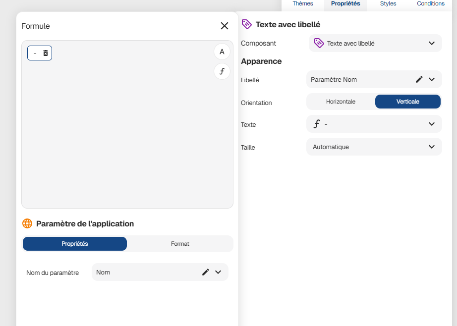

Param�tres d'application
Vous pouvez passer des informations � votre application Zyllio directement via son URL. Cela permet de piloter l'affichage ou de transmettre des donn�es (comme un nom d'utilisateur ou un ID) d�s l'ouverture.
Structure de l'URL
Les param�tres s'ajoutent apr�s l'ID de votre application en commen�ant par un point d'interrogation (?).
Cas A : Indiquer un �cran sp�cifique (Optionnel)
Si vous souhaitez que l'application s'ouvre sur un �cran pr�cis plut�t que sur l'accueil par d�faut, placez le nom de l'�cran en premi�re position.
- Exemple :
https://zyllio.link/apps/<appId>/?EcranDeVente
Cas B : Passer des donn�es sans changer l'�cran
Si vous voulez simplement transmettre des donn�es sans changer l'�cran de d�marrage, listez vos param�tres directement.
- Exemple :
https://zyllio.link/apps/<appId>/?Nom=Didier
Combiner plusieurs param�tres
Pour cumuler l'�cran de d�marrage et des donn�es suppl�mentaires, utilisez le symbole & comme s�parateur.
[!TIP]
R�gle d'or : Si vous sp�cifiez un �cran de d�marrage, il doit imp�rativement �tre le premier param�tre apr�s le
?.
Exemple complet :
https://zyllio.link/apps/d0f269524cd4/?TableauDeBord&Nom=Didier&Statut=Premium
Dans cet exemple :
- L'application force l'ouverture sur l'�cran TableauDeBord.
- Elle transporte les variables Nom (Didier) et Statut (Premium).
Comment r�cup�rer ces valeurs ?
Pour exploiter ces donn�es dans votre logique No-Code (par exemple pour afficher un message de bienvenue ou filtrer une liste) :
- Allez dans la section Application de l'�diteur.
- Choisissez la fonction "Param�tre de l'application".
- Indiquez le nom de la cl� utilis�e dans l'URL (ex:
Nom).

Gestion des caract�res sp�ciaux (encodage)
Les URLs ne peuvent pas contenir d'espaces ou de caract�res accentu�s directement. Si vos noms d'�crans ou vos valeurs de param�tres en comportent, ils doivent �tre "encod�s".
Les r�gles de base
- Les espaces : Remplacez-les par
%20. - Les accents : Il est fortement recommand� de les �viter dans les noms de vos �crans. Si vous devez passer une valeur avec accent (ex: "S�bastien"), l'URL le transformera souvent automatiquement.
Exemples de conversion
| Texte souhait� | Format dans l'URL |
|---|---|
| �cran de bord | ?Ecran%20de%20bord |
| Pr�nom = H�lo�se | ?Prenom=H%C3%A9lo%C3%AFse |